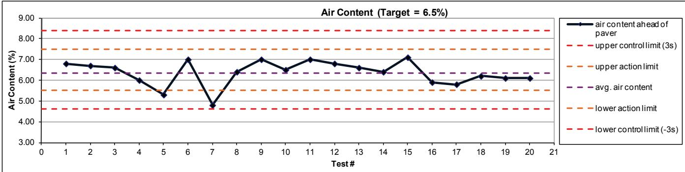
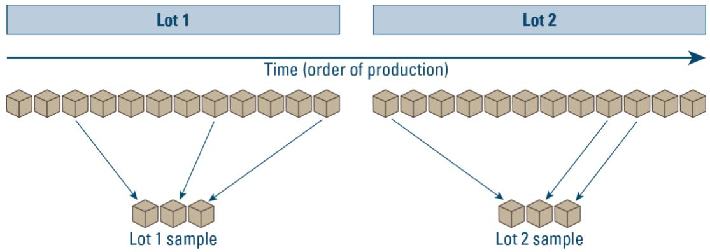
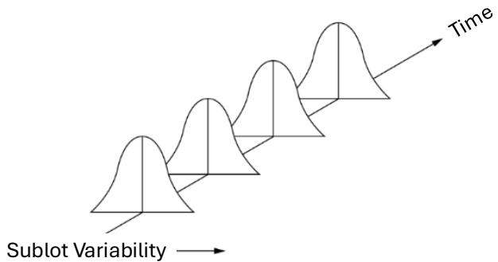
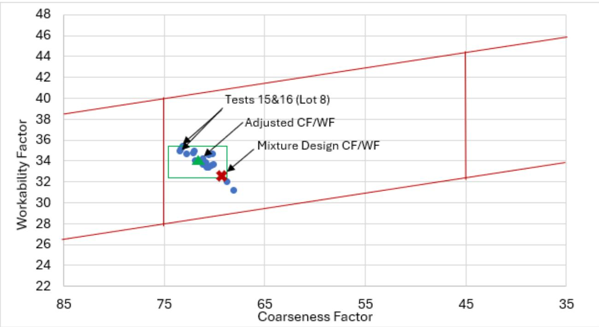
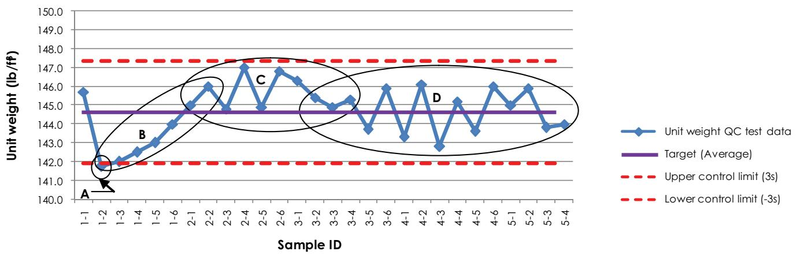
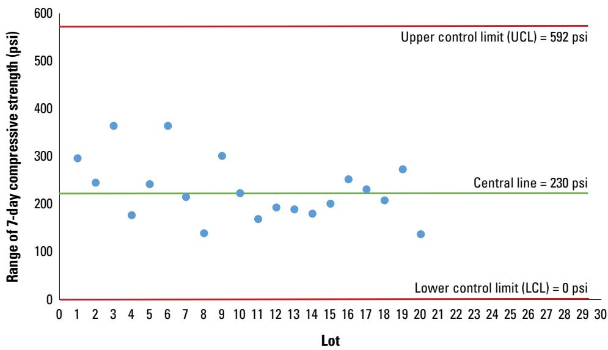
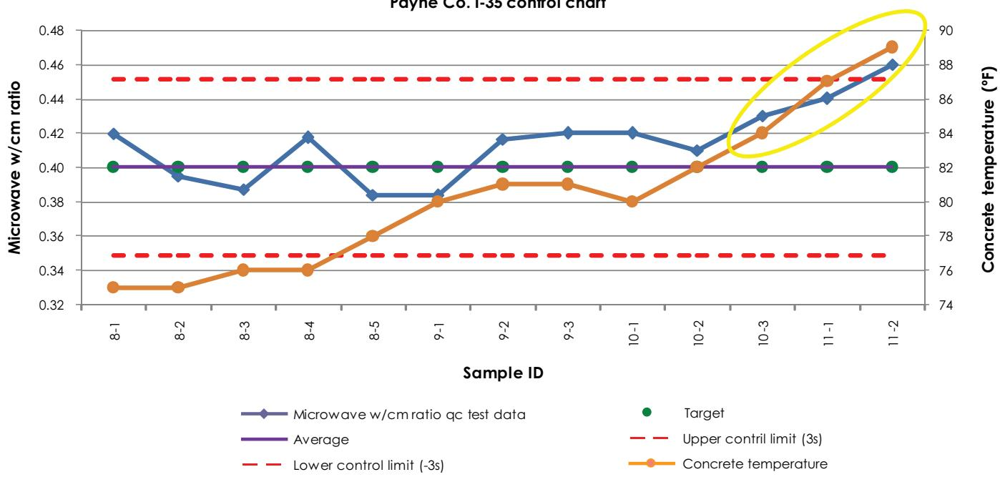

Control Charts for Process Stability
Control charts for process stability are statistical monitoring tools that continuously plot concrete material and process measurements—such as aggregate gradations, slump, air content, unit weight, and early‑age strength parameters—against control limits derived from the data’s central line and standard‑deviation bands [3][4][6][7]. Their primary purpose is to demonstrate that a concrete production or paving operation remains statistically stable, meaning only chance‑cause (common‑cause) variation exists so that all measured properties stay within specification tolerances and any assignable‑cause variation can be identified promptly [3][4][6][7]. This is achieved by a lot‑based random sampling plan that computes subgroup averages and ranges, establishes ±2σ action limits and ±3σ suspension (three‑sigma) limits, and applies predefined pattern rules—such as a single point beyond the three‑sigma envelope or runs of points on one side of the centre line—to flag out‑of‑control signals; the charts are posted, updated, and reviewed to drive corrective actions but are not used as a pass/fail acceptance test [3][4][7].
Sources (7)
Purpose and quality objectives
The guides explain that control charts are used to evaluate the concrete quality characteristic—both raw‑material properties and finished‑mix performance—by continuously plotting measured values such as aggregate gradations, coarseness and workability factors, slump, air content, unit weight (density), yield, and strength parameters (e.g., 7‑day flexural strength or early‑age to later‑age strength ratios) against statistically derived control limits. They are also employed to evaluate and control a suite of concrete‑related characteristics, encompassing material properties and workmanship performance; fresh‑concrete indicators such as unit weight, air content, and SAM number, together with hardened‑concrete qualities like compressive strength (e.g., the 7‑day strength), flexural strength, and surface resistivity are monitored. Control charts further monitor material properties and construction processes—illustrated by concrete air content—to detect unusual variations that suggest an assignable cause. In all cases, the characteristic under control is a measurable performance attribute of the material or process (for example unit weight or air‑content), with variation assessed against three‑sigma control limits to separate common‑cause from special‑cause variability. [3][4][6][7]
The following figure provides an example of such a control chart.

Example Control Chart for Air Content in Concrete Production [6]The figure displays a control chart monitoring air content, plotting individual test results against statistically derived upper and lower action limits as well as three-sigma suspension limits. This visual tool is used to identify changes in materials or processes by flagging unusual variations that suggest an assignable cause, rather than serving as a pass/fail acceptance test.
[3] — Ch. 6 (pp. 313–330); [4] — Ch. 6 (pp. 92–98), App. D (pp. 141–146), App. E (pp. 156–166); [6] — 1. Quality Assurance Concepts (pp. 13–14); [7] — Ch. 5 (pp. 34–39)
The guides concur that the primary quality requirement addressed by control charts is to keep the concrete production or paving process within its specification tolerances by ensuring it remains statistically stable. As one source states, “Control charts are required to demonstrate that the paving process remains statistically stable so that all measured concrete properties stay within their specification tolerances.” Stability is defined as a condition where only chance‑cause variation exists: “If only chance causes variation is present in a process, the process is considered stable, predictable, and in a state of statistical control.” Quality is achieved when “the process is stable, and only common cause variability is present” and that common‑cause variability “is small enough to allow products to remain within specification tolerances.” The purpose of SPC is therefore “to identify change,” with control charts serving as “an effective means for identifying the impact of assignable causes on the materials and/or construction processes.” When “assignable cause variability present in materials, processes, sampling, or testing associated with a process will cause excessive, undesirable variability in one or more quality measurements,” it manifests as “special cause variability” – “Unusual changes that arise in a process are called special cause variability.” By continuously monitoring test results against control limits, “Process control testing in conjunction with control charts will help us identify and remove special cause variability, resulting in a stable process.” [3][4][6][7]
The following figure illustrates this concept by displaying a run chart for the flexural strength of a concrete mixture.
 Run chart (or strip chart) for the flexural strength of a concrete mixture. [3]
Run chart (or strip chart) for the flexural strength of a concrete mixture. [3]
The figure displays a run chart, which is constructed by plotting measurements over time to understand variability within a process. It shows the flexural strength of a concrete mixture plotted against sample numbers, illustrating how such charts serve as essential tools for process improvement. While this specific chart is a run chart without statistical limits, it represents the foundational data plotting used in control charts to monitor stability.
[3] — Ch. 6 (pp. 313–330); [4] — Ch. 6 (pp. 92–98), App. D (pp. 141–146), App. E (pp. 156–166); [6] — 1. Quality Assurance Concepts (pp. 13–14); [7] — Ch. 5 (pp. 34–39)
Scope and applicability
Control charts for process stability are applicable to concrete pavement projects—including FAA and DOD paving work—where variability may arise from the materials, construction processes, sampling, or testing. They are used for concrete materials and all associated construction steps (mixing, placement, curing, handling, transport, batch‑plant operations) as well as for aggregate gradations (fine and coarse), combined aggregate factors, and concrete mix properties such as slump, air content, temperature, unit weight, yield, and flexural strength. Control Charts for Process Stability are applicable across the full spectrum of concrete‑paving work. The procedure can be employed on‑site to monitor fresh‑mix variables such as unit weight, air content, SAM number and aggregate moisture (fine, coarse, intermediate), as well as hardened‑concrete properties including compressive strength, flexural strength, surface resistivity, and the resulting pavement characteristics—thickness, dowel‑alignment score, and surface smoothness. The control‑chart approach is applicable wherever concrete is used as the pavement material and where its production steps—mixing of aggregates and cement, placement on the job site, and subsequent compressive‑strength testing—are monitored. Control charts can be applied to any material or construction process where test data are collected, such as the concrete mix components used in pavement work; they help detect unusual variations that may signal an assignable cause, for example a change in fly ash carbon content reflected by air‑content measurements, allowing the contractor to adjust the process accordingly. Control charts are used on Portland cement concrete paving projects where field tests such as air‑content measurements are routinely recorded. By computing each mix’s average, standard deviation and coefficient of variation, provisional upper and lower control limits at ±3 σ are established based on a target value that reflects the specific mixture proportions and placement conditions. [3][4][6][7]
[3] — Ch. 6 (pp. 313–330); [4] — Ch. 6 (pp. 93–98), App. D (pp. 141–146), App. E (pp. 156–166); [6] — 1. Quality Assurance Concepts (pp. 13–14); [7] — Ch. 5 (pp. 36–39)
Control charts are mandatory when agency specifications—such as FAA or DOD requirements—call for them to be prepared, submitted, and monitored for specific concrete parameters. They are also required whenever the objective is to detect changes in materials or construction processes that could lead to premature pavement failure, because they provide a visual indication of whether a process is in control. In all other situations their use is optional; contractors may elect to employ charts for any characteristic they deem valuable for project‑level process control or continuous quality improvement, and off‑site material producers are asked to submit sample charts before production begins, with the purchaser reviewing them throughout the production period.
Control charts must be based on a lot‑based random sampling plan, posted in an RPR‑ or Government‑approved location, kept current, and display the project number, measurement type, sample identifiers and the applicable action limits. Action and suspension (or warning) limits are typically prescribed as ±2σ for action and ±3σ for suspension, although tighter limits may be adopted to trigger earlier corrective actions. The charts are intended to document trends after testing and support investigations of assignable causes; they are not real‑time control tools except for air content, temperature, and slump measurements.
Using control charts as a formal acceptance tool or as the basis for compliance/pass‑fail decisions is expressly inappropriate. A practical limitation is that, unlike pure statistical process‑control charts, the limits on required charts can be derived from specification provisions or user experience rather than strict statistical calculations, so their effectiveness depends on correct construction, prompt updating, and regular review. [3][4][7]
The figure below illustrates a properly constructed control chart with statistically derived limits to demonstrate this correct application.
 Control chart for Workability Factor (WF) using statistically computed central line and action and control limits. [3]
Control chart for Workability Factor (WF) using statistically computed central line and action and control limits. [3]
The figure displays a statistical monitoring tool plotting the Workability Factor against Test ID, featuring a Central Line representing the process average surrounded by Upper Action Limit and Lower Action Limit bands.
[3] — Ch. 6 (pp. 319–330); [4] — App. D (p. 141); [7] — Ch. 5 (pp. 34–35)
Test methods and procedures
Control charts for process stability are built following a lot‑based sampling plan that defines sample quantity, collection locations, measurement procedures (e.g., fine and coarse aggregate gradation, slump, air content, unit weight, flexural strength) and testing frequency. “Random sampling tools, including the processes described in ASTM D3665 should be used as specified in agency requirements.” Samples are grouped into sub‑groups—commonly three 7‑day compressive‑strength specimens—and each subgroup’s average (X̄i) and range (Ri) are calculated; the overall central lines X¯¯ and R¯ are then obtained by averaging the subgroup averages and ranges. “The central line in an X ̅ chart is a measure of central tendency, called X ̅ ̅.” Control limits are established using either ±2 standard deviations for action limits and ±3 standard deviations for suspension limits (“In statistically developed control charts, action limits are typically established at ±2 standard deviations (±2s), while suspension limits are typically established at ±3 standard deviations (±3s)”) or, for small equal‑size subgroups (n ≤ 10), with ASTM‑published factors A₂, D₃, and D₄ (“Statistical factors A ₂ , D ₃ ,and D ₄ used in these equations are published by ASTM International”) via the equation UCL_X = X¯¯ + A₂·R¯. “Using these data, a control chart is first produced that plots the average of the three compressive strength test results for the subgroup (lot) over time.” Measurements (or averages of measurements representing a single sample) are plotted over time using sample IDs (or sampling times) (“To construct the control chart, measurements (or averages of measurements representing a single sample) are plotted over time using sample IDs (or sampling times)”). The resulting X‑bar and R charts display the central line and calculated upper and lower control limits; any point falling outside these limits signals assignable‑cause variation.
Stability assessment applies predefined pattern tests to the plotted data: a single point beyond the three‑sigma limits (“One test result is outside of the 3s limits”), nine successive points on one side of the centre line (“Nine consecutive test results are on the same side of the average value”), fourteen alternating up‑and‑down points (“Fourteen consecutive test results are alternating up and down”), two of three consecutive points exceeding two sigma on the same side (“Two of three consecutive test results are more than 2s from the average (and on the same side of the average)”), as well as secondary checks such as four of five points beyond one sigma on the same side or eight straight points more than one sigma from the centre. When any rule is triggered, the QC team investigates assignable causes and implements corrective actions before suspension limits are reached. [3][4][7]
The figure below illustrates these stability concepts using CF and WF parallelograms to display allowable limits alongside actual production data.
 CF and WF parallelogram, showing the allowable limits box (green) and the data from tests of lots of production paving provided the figure.2. [3]
CF and WF parallelogram, showing the allowable limits box (green) and the data from tests of lots of production paving provided the figure.2. [3]
The figure displays a scatter plot with Coarseness Factor on the x-axis and Workability Factor on the y-axis, featuring blue dots representing test values and a red ‘x’ marking the mixture design point. A green rectangle labeled “Mixture Design CF/WF” encloses the data points, while red lines define broader action limits around this central area.
[3] — Ch. 6 (pp. 320–322); [4] — App. E (pp. 159–163); [7] — Ch. 5 (p. 39)
Valid control‑chart results require that testing be performed by experienced, qualified or certified personnel, that all test equipment be inspected regularly and kept in good working order with documented calibration, and that changes in operators or QC staff be minimized to avoid adding variability; these practices are emphasized as ways to reduce both chance and assignable cause variation, although the manual does not specify particular environmental controls such as temperature or humidity limits. [3]
The following figure illustrates practical applications of these principles in uniformity testing.
 Field technicians conducting uniformity testing at a concrete production site. [3]
Field technicians conducting uniformity testing at a concrete production site. [3]
The image displays an outdoor construction environment where multiple workers in safety vests are gathered around portable tables equipped with various testing apparatuses and containers.
[3] — Ch. 6 (pp. 313–315)
Sampling and testing frequency
The guides require a sampling plan that “explicitly defines how many samples will be taken, where they will be collected, and how often testing occurs” and also state that “Control‑chart implementation begins with a sampling plan that explicitly defines what will be measured, how many samples are required, and how often the sampling or testing must occur.” The plan is tied to production units—“material lots, volume produced, or linear footage placed”—and may be “lot‑based” for certain projects, while other work can use “material volume, linear feet, square yards or sublots as intervals.” Random allocation is mandated: “all sampling must be random to avoid bias,” and “Statistical control charts require the use of random sampling, where tools such as random number generators are used to assign sampling locations or material sublots in a manner that minimizes bias.” Frequency is selected to give statistical confidence yet remain practical: “Frequency is chosen to provide statistical confidence that the data represent the entire work while remaining practical given test turnaround time, safety considerations, and any destructive impact,” and “Sampling and testing should be performed at a frequency capable of providing confidence that the results represent the whole of the work.” Practical constraints are incorporated: “The plan also incorporates practical considerations such as personnel safety, time required to obtain and test samples, timeliness of results for process control, and the risk of continuing work before results are available, ensuring that the chosen locations, quantities, and frequencies provide a representative picture of the process without overburdening staff.” For concrete paving, each lot forms a subgroup of three cylinders, with “the average compressive strength of those three specimens supplies the chart point, thereby fixing the sample quantity per location” and “each subgroup (lot) is represented by three cylinders.” [3][4]
The following figure illustrates the random sampling method required to ensure unbiased data collection for these control charts.

Random sampling of material lots over time. [3]The figure illustrates a random sampling plan where individual units are selected from two distinct production lots based on the order of production.
[3] — Ch. 6 (pp. 320–322); [4] — Ch. 6 (pp. 93–95), App. E (pp. 156–157)
Samples for control‑chart monitoring must be selected through a documented sampling plan that ties each measurement to logical units of work and specifies the number of samples, frequency, and procedure. The guides agree that “When applying control charts, random sampling should always be used so that results from biased samples do not influence the interpretation of the chart” and that “Statistical control charts require the use of random sampling, where tools such as random number generators are used to assign sampling locations or material sublots in a manner that minimizes bias that may affect test results.” The plan is typically lot‑based; “For FAA and DOD projects, control chart sampling plans are lot-based,” and more generally “A sampling plan is often based on (1) lots of material produced, (2) a volumetric quantity of material produced, or (3) a number of linear feet or square yards of material placed.” Sampling frequency must provide confidence that the data represent the entire material, process, lot, or completed work: “The sampling and testing should be performed in a manner that provides confidence that the test results are representative of the work performed for that interval of time,” and “Sampling and testing should be performed at a frequency capable of providing confidence that the results represent the whole of the work.” When the process is stable, data used to set limits must reflect common‑cause variation: “The upper and lower control limits should be based on data that are repreentative the process whil t i stable, meani that no special causes have affected any of the data points used,” and a minimum of ten stable observations may be used: “Temporary control limits can be established with as few as 10 data points collected while the process is stable.” If an intentional change occurs, new samples must be taken and limits recomputed: “If a change to the process has been intentionally made or is known to have occurred, the statistically established central line and control limits should be recomputed.” Throughout, subgroups are formed without bias: “In all cases the subgroup used in the creation of a control chart should be selected in a manner that does not introduce bias into the analysis.” [3][4][7]
The following figure illustrates the variation observed in sublots sampled from an in-control process experiencing only chance cause variability.

Variation observed in sublots sampled from an in-control process experiencing only chance cause variability. [3]The figure displays a series of bell-shaped curves arranged along a diagonal axis labeled ‘Time’, representing the distribution of measurements for successive sublots. Each curve features a vertical line indicating the mean, while the width represents the standard deviation or dispersion of data from that mean. This visualization demonstrates that when only chance causes variation are present, the process remains stable and predictable.
[3] — Ch. 6 (pp. 320–322); [4] — Ch. 6 (pp. 93–97), App. E (pp. 156–163); [7] — Ch. 5 (pp. 35–36)
Acceptance criteria and tolerances
Control charts assess acceptability by first establishing a central line (the process average) and then plotting each measurement against statistically derived limits. The guides agree that the primary control limits are set at “±3 standard deviations (σ) from the centre line” (“upper control limits (UCL) and lower control limits (LCL) are typically established at ±3 standard deviations (σ) from the center line”; “Control limits are drawn at three standard deviations (3s or three-sigma) above and below the average centreline.”). In addition, many sources add tighter “action limits” for early warning: “tighter action limits such as ±2σ or ±2.5σ may be added” and, for FAA/DOD charts, “the action (or warning) limits are set at plus or minus two standard deviations from the centre line, while the suspension (or action) limits are placed at plus or minus three standard deviations.” A work is deemed acceptable when “all points fall between the UCLs and LCLs of the X̅ chart and R‑chart, there is strong likelihood that the process is in control” and no point crosses the ±3σ envelope (“One test result is outside of the 3s limits.”).
Statistical rule criteria common to all guides require the absence of non‑random patterns: “six consecutive points trending upward or downward, nine successive points on one side of the centre line, fourteen alternating points, two of three points beyond two standard deviations, four of five points on the same side exceeding one standard deviation, fifteen points confined within one standard deviation, or eight consecutive points more than one standard deviation from the centre line.” The testing guide repeats several of these: “nine consecutive test results are on the same side of the average value,” “fourteen consecutive test results are alternating up and down,” “Two of three consecutive test results are more than 2s from the average (and on the same side of the average),” “Four of five test results on the same side of the centre line are more than one standard deviation from the centre line,” and “eight consecutive points all beyond ±1σ.”
Visual standards described across sources include a stable bell‑shaped distribution with a consistent central line and similar spread across sublots (“Visually, a bell-shaped distribution with a stable central line and similar spread across successive sublots confirms that the process is in control”), an even distribution of points within the ±3σ band, and the statement that “By definition, 50% of the test values fall between the upper and lower quartiles.” When these numerical limits, rule‑based criteria, and visual patterns are all satisfied, the guides state that the work is acceptable. [3][4][7]
The figure below illustrates how test results can demonstrate varying degrees of process stability relative to acceptance limits and targets.
 Concentric zones representing acceptance limits, consistent control, and optimal target achievement. [3]
Concentric zones representing acceptance limits, consistent control, and optimal target achievement. [3]
The figure displays three concentric circular regions: an outer pink ring, a middle green ring, and an inner white circle containing scattered ‘x’ marks.
[3] — Ch. 6 (pp. 313–330); [4] — Ch. 6 (pp. 92–98), App. E (pp. 156–166); [7] — Ch. 5 (pp. 35–39)
Control charts evaluate each measured value by plotting it against upper and lower limits that are derived from the specification or from statistical calculations such as standard‑deviation bands. They also evaluate each sampled measurement—whether an individual test result or a lot average—by plotting it over time against a central line that represents the moving average of all data collected. The central line, usually the mean of a lot, provides the reference for average performance while the spread of points indicates process variability. Upper and lower control limits derived from statistical calculations (typically ±2σ for action and ±3σ for suspension) provide thresholds; many guides also place horizontal lines at the specification extremes. When an individual result or lot average falls within the action limits the process is considered in‑control, but values that exceed the action limit trigger corrective actions and those beyond the suspension limit indicate assignable‑cause variation requiring immediate intervention. An individual point that falls outside the specification limits is immediately classified as out‑of‑spec and triggers corrective action, whereas a point inside the spec band but exceeding the statistical control limits signals assignable‑cause variation and prompts investigation before any process change. Control charts are used in SPC to spot changes rather than to declare a result pass or fail against the specification; they flag any point that falls outside those limits as unusual and suggest an assignable cause that must be investigated. [3][4][6][7]
The figure below illustrates typical control chart limits used in FAA and DOD projects.
 Typical control chart limits for FAA and DOD projects. [3]
Typical control chart limits for FAA and DOD projects. [3]
The figure displays a schematic of horizontal lines representing various thresholds on a measurement versus tests graph, including specification limits, suspension/action limits, action/warning limits, and a central line. The diagram visually defines the specific limits required by FAA and DOD specifications, such as suspension or action limits, which serve as thresholds for identifying assignable-cause variation.
[3] — Ch. 6 (pp. 319–322); [4] — Ch. 6 (pp. 93–98); [6] — 1. Quality Assurance Concepts (pp. 13–14); [7] — Ch. 5 (pp. 34–39)
Quality control and process monitoring
The guides recommend that control charts continuously track key material and process variables. Fresh‑mix properties include ‘Fine aggregate gradation’, ‘Combined aggregate gradation coarseness factor (CF) and workability factor (WF)’, and the concrete’s fresh characteristics such as ‘Concrete mixture – slump, and Concrete mixture – air content’ together with ‘unit weight, air content, and SAM number’. Hardened‑concrete performance is monitored through ‘7‑day flexural strength’, ‘compressive strength’, ‘flexural strength’ and ‘surface resistivity’. Aggregate condition is captured by ‘Aggregate moisture content (fine, coarse, and intermediate aggregates)’. Installation quality variables such as ‘pavement thickness’, ‘Average dowel alignment score’ and ‘Smoothness’ are also plotted. The guides note that control charts for ‘air content’ and the broader statement ‘they do not help in real time with the exception of control charts for concrete air content, temperature and slump’ provide timely detection of assignable causes, enabling corrective action to keep production and construction quality consistent. [3][4][6][7]
The following figure illustrates the parallelogram representation of the coarseness factor (CF) and workability factor (WF), highlighting the allowable limits box adjusted to show tolerance limits.

CF and WF parallelogram showing the allowable limits box adjusted to show tolerance limits alongside data from production paving lots. [3]The figure displays a scatter plot of Workability Factor versus Coarseness Factor, featuring red lines that define an action limit envelope around a central green box representing the allowable limits.
[3] — Ch. 6 (pp. 320–330); [4] — Ch. 6 (pp. 93–98), App. D (pp. 142–146), App. E (pp. 156–166); [6] — 1. Quality Assurance Concepts (pp. 13–14); [7] — Ch. 5 (pp. 36–39)
The guides concur that whenever a control chart signals an assignable‑cause variation, the process must be examined and corrective action or additional testing initiated. “Control charts should be used as part of the process control system for identifying trends so that potential problems can be corrected before they become serious.” Typical limits are set at ±2 standard deviations for action limits and ±3 standard deviations for suspension limits: “Action limits are typically established at ±2 standard deviations (±2s), while suspension limits are typically established at ±3 standard deviations (±3s).” Any point beyond these bounds—especially a single observation outside the three‑sigma upper or lower limits—requires immediate investigation: “If a measurement is greater than +3σ or less than -3σ from the average measurement, it is most likely due to assignable cause variation.”
Specific patterns that trigger response include: - Six consecutive results rising or falling: “Six consecutive test results are increasing or decreasing.” and the broader rule set of “six consecutive results rising or falling, nine points on one side of the centre line, two of three measurements more than two sigma from the centre, clusters of points within one sigma, or any trend moving the process away from its central tendency.” - Nine consecutive points on one side of the centre line, fourteen alternating up‑and‑down points, two of three successive points >2σ on the same side, four of five successive points >1σ on the same side, or eight consecutive points beyond one sigma regardless of direction: “Triggers include a single observation outside the three‑sigma upper or lower limits; runs such as nine consecutive points on one side of the centre line, fourteen alternating up‑and‑down points, two of three successive points more than two sigma from the mean on the same side, four of five successive points more than one sigma on the same side, or eight consecutive points beyond one sigma regardless of direction.” - A sustained shift or new pattern not explainable by common‑cause variation after as few as ten stable observations (confirmed at fifteen, twenty, or twenty‑five results): “A sustained shift or new pattern that cannot be explained by established common‑cause variation—detectable after as few as ten stable observations and confirmed at fifteen, twenty, or twenty‑five results—signals that the current limits no longer represent the process voice and should be recomputed, with further testing to confirm stability.”
The guides also note practical examples of out‑of‑control signals: flexural‑strength readings above 562 psi or below 485 psi, repeated measurements above 549 psi or below 498 psi, and air‑content values hitting an upper action limit (~7 %) or falling below the lower specification limit (4.5 %): “Flexural strength measurements greater than 562 psi or less than 485 psi would likely indicate that an assignable cause of variation” and “Measurements that trended above 549 psi or below 498 psi would prompt the contractor to consider taking action.” A sharp reduction in air content may signal a change in fly ash carbon content, prompting dosage adjustments or further testing: “For example, a sharp reduction in air content may indicate that the carbon content of the fly ash has changed, requiring an increased dosage of air entraining admixture.”
Overall, the charts provide “a clear indication of when a process is in control, out of control, or in control but headed in an unfavorable direction,” and any such indication—whether a single point beyond ±3σ, a trend toward specification limits, increasing variability, or the patterned runs described above—must lead to process adjustments, mix‑proportion changes, removal of out‑of‑control data points with recomputation of limits, or additional testing until only common‑cause variation remains. [3][4][6][7]
The figure below illustrates specific out-of-control test conditions on a control chart.

Control chart showing out-of-control test conditions [7]The figure displays a statistical monitoring tool plotting unit weight QC test data against control limits derived from the central line and standard-deviation bands.
[3] — Ch. 6 (pp. 313–330); [4] — Ch. 6 (pp. 92–98), App. E (pp. 163–166); [6] — 1. Quality Assurance Concepts (pp. 13–14); [7] — Ch. 5 (pp. 34–39)
Nonconformance and corrective action
When inspection or testing reveals non‑conforming work or materials, the control‑chart system obligates the contractor to either correct the problem and return the process to its established central tendency or halt the activity until the assignable cause is identified and remedied. The guides require that “the corrective steps must be documented in the CQCP, and an investigation is launched involving all parties—supplier, batch plant operator, loader operator, paving crew, and test technicians—to determine the root cause.” An initial investigation “must first investigate the out‑of‑control point to determine its cause; if a specific assignable cause is identified, appropriate process adjustments are made using available experience and companion records.” The guides note that “Contractor experience and companion records (if available) can be used to identify ways to address the issue(s) and bring the process back into control.” Corrective actions such as adjusting mixture proportions or other process steps are implemented promptly; the control chart is then updated with the new measurement (and any revised limits) to verify that stability has been restored, and “continued use of the chart(s) will allow the contractor to observe the impact of the changes to the process.”
Two alternative routes for handling the offending data point are prescribed. The contractor may “remove the data point and recompute the central lines and control limits …” or may “address the issue associated with the out‑of‑control data point, restart the measurement process, and use the new data to re‑establish the control chart.” Once data associated with assignable cause variation are identified, “actions to address the causes of variation are implemented, and these data points are removed from the data set.” If the initial action proves ineffective, further adjustments may be attempted, but work must be stopped altogether when predetermined limits are exceeded. Should the process remain out of control after corrective actions, the guides require development of an improvement plan for additional changes or improvements to the process. [3][4]
The following figure illustrates a control chart for CF that utilizes statistically computed central lines along with action and control limits.
 Control chart for CF using statistically computed central line and action and control limits. [3]
Control chart for CF using statistically computed central line and action and control limits. [3]
The figure displays a statistical monitoring tool plotting the Coarseness Factor against Test ID, featuring a Central Line (Process Average) flanked by Upper Action Limit (+2s), Lower Action Limit (-2s), Upper Control Limit (UCL or +3s), and Lower Control Limit (LCL or -3s). The data points for tests 1 through 14 remain variable across a process average but below the upper action limit.
[3] — Ch. 6 (pp. 319–330); [4] — Ch. 6 (pp. 92–98), App. E (pp. 163–166)
When a plotted point lies outside the upper or lower control limit, the first step is to investigate any recorded notes or other evidence to determine whether an assignable cause exists; if such a cause is found, corrective action is taken and the offending data point is removed from the dataset (effectively rejecting that result) and the chart limits are recomputed. If no plausible cause can be identified, the value is assumed to represent natural variation and is retained in the analysis as an accepted observation. Points whose cause remains unclear after initial review should be investigated further until a determination can be made, while subsequent production runs after corrective actions are monitored to confirm that the process returns within control limits, thereby validating the correction. [4]
The figure below illustrates an X chart featuring a trial central line and control limits to visualize this process stability analysis.

R-chart with trial central line and control limits [4]The figure displays an R-chart, a statistical monitoring tool used to track the range of compressive strength measurements across different production lots. It features a central line and upper/lower control limits that define the boundaries for process stability, allowing operators to identify when assignable cause variation is present. The chart demonstrates how a lot-based sampling plan plots concrete strength parameters against these limits to determine if the production operation remains statistically stable.
[4] — App. E (pp. 163–166)
Documentation and reporting
Inspection records must capture a complete set of data for every concrete lot or subgroup, including the project number, quality measurement name, sample identifier or collection time, measured values for each characteristic (e.g., fine and coarse aggregate gradations, combined gradation factors, slump, air content, unit weight, yield, compressive and flexural strengths), and the exact pavement location from which the sample was taken. Information about the samples should always be recorded since it is critical to know which portion of material or area of constructed pavement is associated with a specific test result.
Sampling information required by the guides includes the number of samples, the sampling process, sampling locations, frequency of collection, and the detailed measurement procedure (including the number of measurements per sample). For concrete, each subgroup (lot) is represented by three cylinders and the average and range are computed for each subgroup. The plan also specifies whether tests are destructive and any required laboratory certifications for the test methods used.
Certifications to be documented comprise all applicable laboratory or field‑testing accreditations and any FAA or DOD certifications referenced in the specifications, ensuring that each recorded result can be linked to a certified method.
Test results are entered on the control chart together with the central line, statistically derived upper and lower control limits (normally ±3σ) and any user‑defined action limits (e.g., ±2σ). The charts plot sample IDs or sampling times and measurements (or averages of measurements representing a single sample) over time, flagging points that exceed specification limits (e.g., air content 6.0 % ±1.5 %, upper/lower limits 7.5 %/4.5 %) or control limits.
Corrective actions must be documented whenever a point reaches an action or suspension limit. The record shall note the assignable‑cause investigation, the specific corrective step taken (such as removal of the out‑of‑control point, recomputation of the central line and control limits, adjustment of admixture dosage, repair of equipment, or change in mix proportions), and any subsequent process adjustments observed on later chart updates. The charts must be posted in an approved location, kept current, and may reference supporting data such as weather conditions, equipment operation logs, and material deliveries to aid interpretation. [3][4]
The figure below illustrates a control chart for concrete flow (CF) utilizing current specification action and suspension limits.
 Control chart for CF using current specification action and suspension limits. [3]
Control chart for CF using current specification action and suspension limits. [3]
The figure displays a control chart monitoring the Coarseness Factor (CF) across sequential Test IDs, featuring horizontal lines representing the central line, upper and lower action limits, and upper and lower suspension limits. The plot demonstrates that the contractor adjusted laboratory values as a result of test batches because the plot of test values is consistently above the mixture design value.
[3] — Ch. 6 (pp. 319–330); [4] — Ch. 6 (pp. 93–98), App. E (pp. 157–166)
“Quality records for control charts are posted at an approved location, kept up‑to‑date, and must show the project number, the specific quality measurement, sample identifiers and the applicable action or warning limits together with each test result;” they also “must include the sample identifier, collection location and time, and the measured value of the required characteristic”. “Quality records from control charts should be reported as time‑ordered plots that show each measurement together with the statistically derived central line and control limits.” The charts display “three‑sigma upper and lower limits derived from the average and standard deviation of the data” (or optional ±2 σ action limits) and list the calculated sample mean, standard deviation and confidence limits.
The records are reviewed continuously by the QC team and shared with superintendents, suppliers, QA personnel and other stakeholders “so that trends, assignable causes and rule‑of‑thumb violations can be identified early and corrective actions documented.” They must also be reviewed on a regular schedule “so that any point outside the limits or adverse trend signals a loss of common‑cause stability can be identified promptly.” An acceptance authority independent of QC reviews the charts “to verify that the process means and dispersions remain within the established control limits and meet the FAA percent‑within‑limits (PWL) criteria;”. The QC team examines every point that falls beyond the upper or lower control limit (UCL/LCL), uses production notes to determine if an assignable cause is present, documents corrective actions, and may remove out‑of‑control data before recomputing the central line and limits “so they reflect only natural variation.”
“Acceptance of a production run is confirmed when the required number of consecutive measurements remains within the control limits after any suspension. The revised limits become the acceptance criteria for subsequent lots and are used as a benchmark in future performance evaluations, providing documented evidence to support both current acceptance decisions and long‑term monitoring of process stability.” Likewise, “Acceptance of a batch is confirmed when its measurements fall within the established limits; ongoing monitoring of the recorded points provides evidence of common‑cause variability and signals any need for limit revision, thereby supporting future performance evaluation.”
Because temporary limits can be set with as few as ten observations, they must be reviewed and potentially updated when fifteen, twenty, or twenty‑five results have been collected. The ongoing documentation “by documenting these statistical trends, the records both support the immediate acceptance decision and provide a performance baseline for future evaluations and potential pay‑factor incentives.” [3][4][7]
[3] — Ch. 6 (pp. 313–330); [4] — Ch. 6 (pp. 92–98), App. E (pp. 157–166); [7] — Ch. 5 (pp. 35–36)
Relationship to long-term performance
Control charts are used during construction to continuously monitor measured material properties; when a data point falls outside the established control limits it flags a special‑cause variation that suggests a change in materials or processes that could undermine durability. Maintaining a stable, capable and on‑target process—where only common‑cause variability is present—keeps the measured characteristics within the natural range that supports the designed service life. Detecting an unusual result triggers corrective actions before the pavement is placed, helping to avoid material deficiencies that would otherwise shorten expected service life or increase susceptibility to distress. [7]
The following figure illustrates an example of w/cm quality control test data alongside corresponding concrete temperatures from a Payne Co. I-35 project.

Example w/cm QC test data with corresponding concrete temperatures for the Payne Co. I-35 project. [7]The figure displays a control chart plotting microwave water-to-cement ratio and concrete temperature against sample IDs, featuring horizontal lines representing upper and lower three-sigma control limits alongside an average line.
[7] — Ch. 5 (pp. 34–35)
The guides advise that after construction is finished the control chart must remain under periodic surveillance. Temporary control limits can be established with as few as 10 data points collected while the process is stable; they should be revised again when 15, 20, and 25 test results are available. Once a set of twenty‑five observations has fixed the limits, they need not be changed unless a known alteration to mixing or batching occurs. Ongoing monitoring requires checking each new observation against the three‑sigma boundaries: “One test result is outside of the 3s limits.” When such an out‑of‑control point appears, the contractor may either discard the offending datum and recompute the central line and limits, or investigate the assignable cause, restart sampling, and re‑establish the chart as described in “If statistical methods are used to establish control limits and one or more points are outside of the control limits, the contractor could (1) remove the data point and recompute the central lines and control limits … or (2) address the issue associated with the out‑of‑control data point, restart the measurement process, and use the new data to re‑establish the control chart.” Moreover, any intentional modification of the process triggers a recalculation: “If a change to the process has been intentionally made or is known to have occurred, the statistically established central line and control limits should be recomputed.” This cyclical review—adding fresh batch results, applying the primary special‑cause tests, and revising limits when necessary—constitutes the required follow‑up monitoring to confirm that only natural variation remains. [4][7]
The following figure illustrates the typical central line representing the process average along with the established control limits.
 Typical central line (process average) and limits on a control chart [4]
Typical central line (process average) and limits on a control chart [4]
The figure displays the structural components of a statistical monitoring tool used to track process measurements over time. It features a central line representing the process average, flanked by upper and lower action limits at two standard deviations and control limits at three standard deviations from that average. The chart also includes specification and suspension limits at the outermost boundaries to define acceptable tolerances.
[4] — Ch. 6 (pp. 96–97), App. E (pp. 163–166); [7] — Ch. 5 (pp. 35–39)
References
- Best Practices Manual: Quality Control and Quality Acceptance of Concrete Airport Pavement ·
ACPTP-2022-4_QC_QA_of_concrete_airfield_pvmt_manual_w_cvr_508 - Quality Control for Concrete Paving: A Tool for Agency and Industry ·
QC_for_concrete_paving_web - Field Reference Manual for Quality Concrete Pavements ·
hif13059 - Testing Guide for Implementing Concrete Paving Quality Control Procedures ·
testing_guide
References
- J. Weiss, M. T. Ley, L. Sutter, D. Harrington, J. Gross, and S. L. Tritsch, "Guide to the Prevention and Restoration of Early Joint Deterioration in Concrete Pavements," National Concrete Pavement Technology Center Iowa State University, Rep. InTrans Project 15-555; TR-697, 2016. [Online]. Available: https://www.cptechcenter.org/wp-content/uploads/2018/03/2016_joint_deterioration_in_pvmts_guide.pdf
- P. Taylor, T. Van Dam, L. Sutter, and G. Fick, "Integrated Materials and Construction Practices for Concrete Pavement: A State-of-the-Practice Manual," National Concrete Pavement Technology Center, Rep. Part of InTrans Project 13-482; TPF-5(286), 2019. [Online]. Available: https://www.cptechcenter.org/wp-content/uploads/2019/12/IMCP_manual.pdf
- T. L. Cavalline, G. Voigt, J. Stempihar, J. Lafrenz, T. Van Dam, M. Boyle, D. Johnson, and Rohan Reddy Jonna, "Best Practices Manual: Quality Control and Quality Acceptance of Concrete Airport Pavement," University of North Carolina at Charlotte, Rep. ACPTP-2022-4, 2025. [Online]. Available: https://www.cptechcenter.org/wp-content/uploads/2026/03/ACPTP-2022-4_QC_QA_of_concrete_airfield_pvmt_manual_w_cvr_508.pdf
- T. L. Cavalline, G. J. Fick, and A. Innis, "Quality Control for Concrete Paving: A Tool for Agency and Industry," National Concrete Pavement Technology Center, 2021. [Online]. Available: https://www.cptechcenter.org/wp-content/uploads/2021/12/QC_for_concrete_paving_web.pdf
- S. M. Taylor and G. E. Halsted, "Guide to Lightweight Cellular Concrete for Geotechnical Applications," National Concrete Pavement Technology Center, Iowa State University, Rep. PCA Special Report SR1008P, 2021. [Online]. Available: https://www.cptechcenter.org/wp-content/uploads/2021/01/guide_to_LCC_for_geotech_apps.pdf
- G. Fick, P. Taylor, R. Christman, and J. M. Ruiz, "Field Reference Manual for Quality Concrete Pavements," The Transtec Group, Rep. FHWA-HIF-13-059; DTFH61-08-D-00019-T-10002, 2012. [Online]. Available: https://www.cptechcenter.org/wp-content/uploads/2018/08/hif13059.pdf
- G. J. Fick, "Testing Guide for Implementing Concrete Paving Quality Control Procedures," National Concrete Pavement Technology Center/Center for Transportation Research and Education Iowa State University, 2008. [Online]. Available: https://www.cptechcenter.org/wp-content/uploads/2018/03/testing_guide.pdf